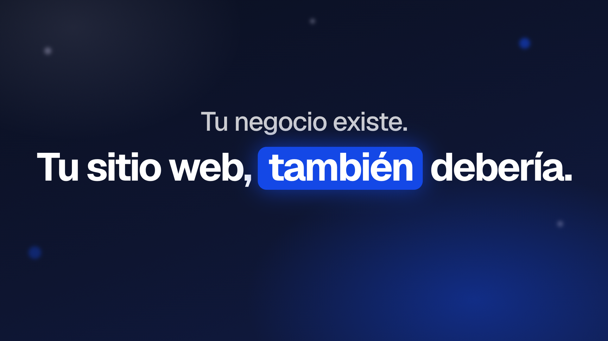
Tu negocio existe. Tu sitio web, también debería.
Primera línea tranquila; la segunda entra con rebote y "también" en una pastilla azul rey.
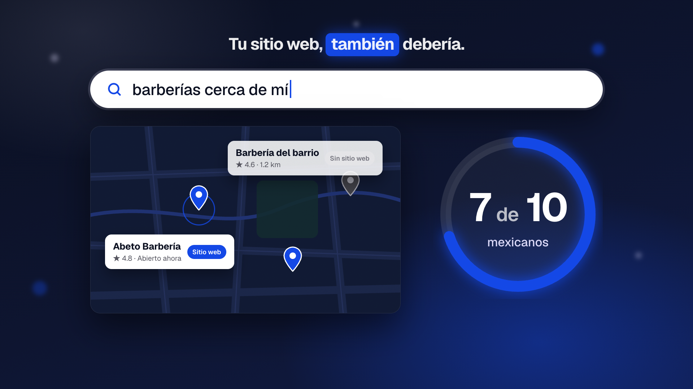
Siete de cada diez mexicanos…
Buscador genérico escribe "barberías cerca de mí", caen pines en el mapa, el anillo llena hasta "7 de 10".
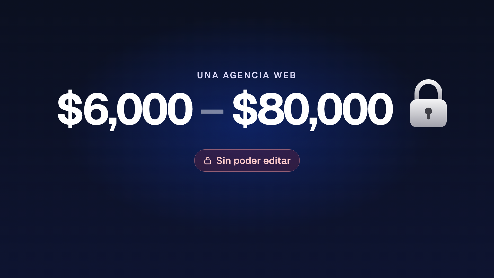
Una agencia cobra hasta ochenta mil pesos.
Odómetro que rueda hasta $80,000; el candado cae con un clic y "Sin poder editar".
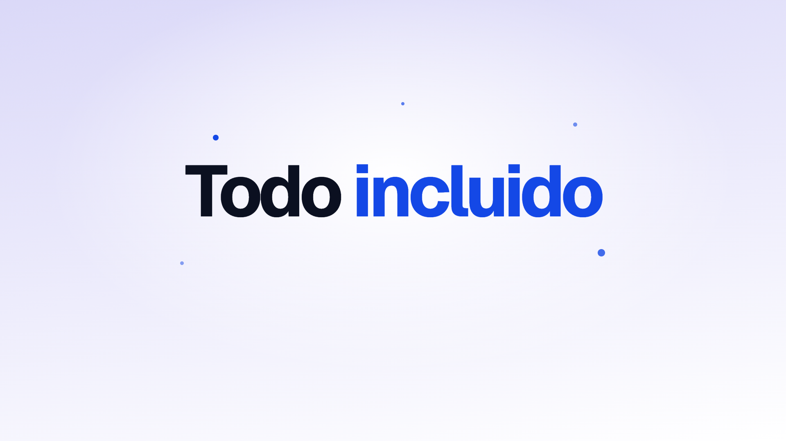
Con Lattiz, todo incluido.
Todo estalla en partículas, el fondo pasa de navy a lavanda y aparece "Todo incluido".
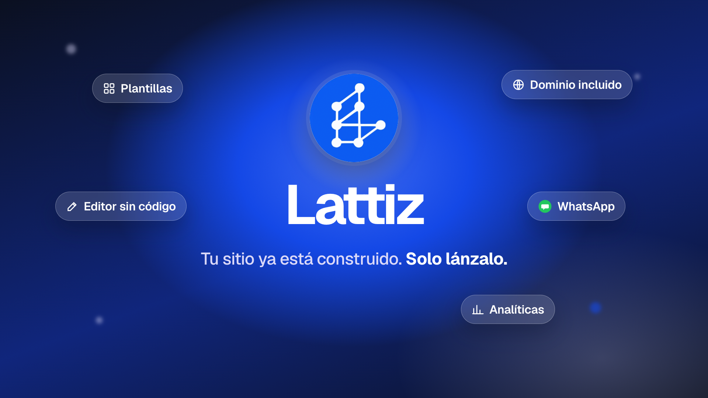
Esto es Lattiz. Tu sitio ya está construido: solo lánzalo.
Las partículas giran en vórtice y forman el logo (tu PNG), barrido de luz, chips de vidrio en órbita.
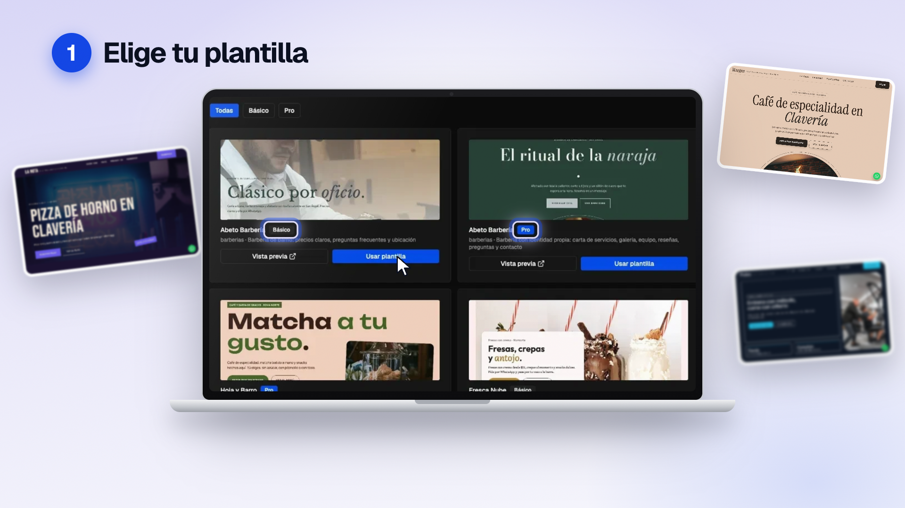
Elige tu plantilla.
Push-in a la galería real; anillos en Básico y Pro; el cursor hace clic en "Usar plantilla"; miniaturas reales flotan con desenfoque.
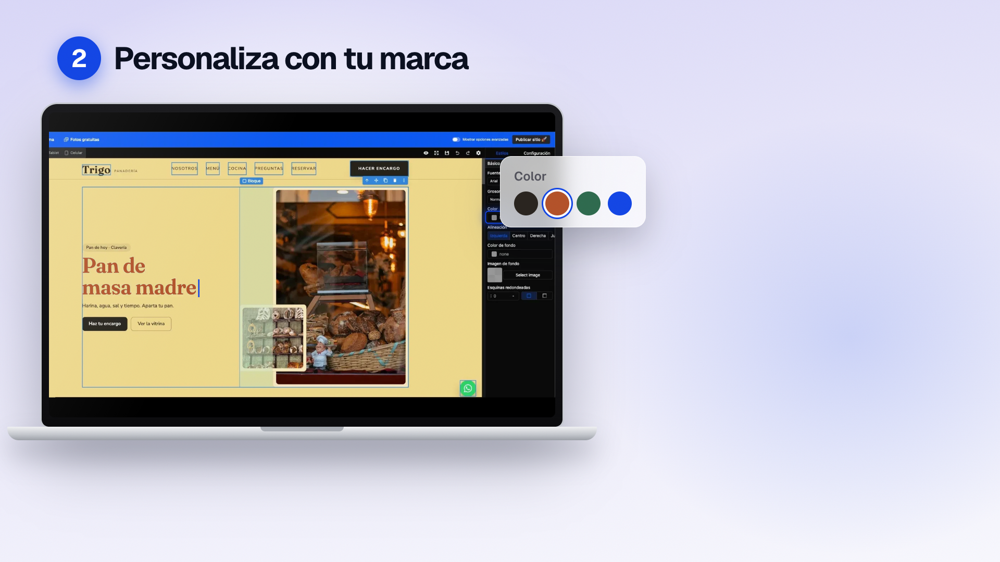
Personalízala con tu marca,
el titular "Pan de masa madre" se reescribe y cambia a terracota; pulsa el campo Color del panel Estilos.
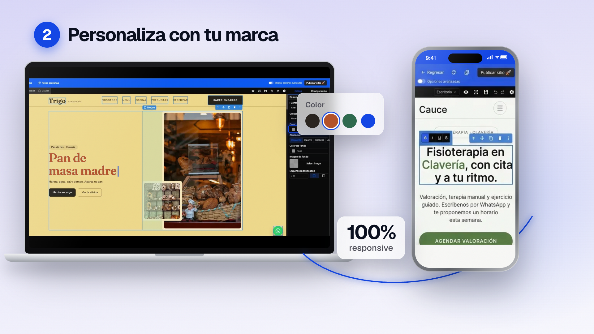
hasta desde tu celular.
Entra el iPhone con el editor móvil real, badge "100% responsive" y un arco azul que une teléfono y laptop.
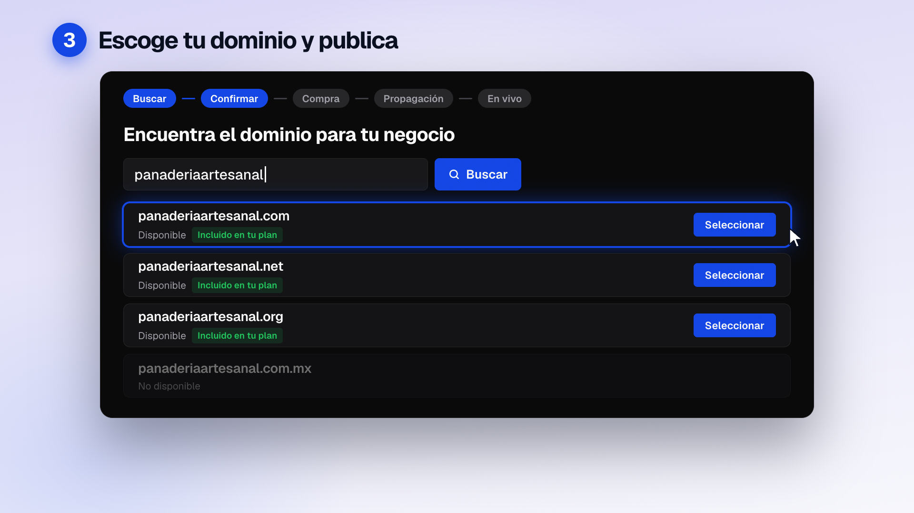
Escoge tu dominio, incluido en tu plan,
se escribe "panaderiaartesanal", entran las filas con "Incluido en tu plan", .com.mx queda gris, el cursor elige .com y el stepper avanza.
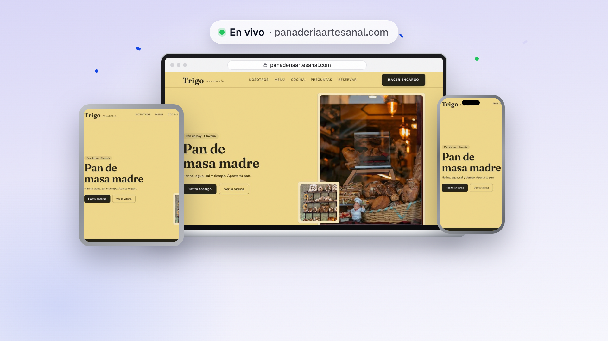
y publica con un clic.
Se presiona "Publicar sitio 🚀", sale el cohete con confeti y el sitio Trigo aparece "En vivo" en laptop, iPad y iPhone.
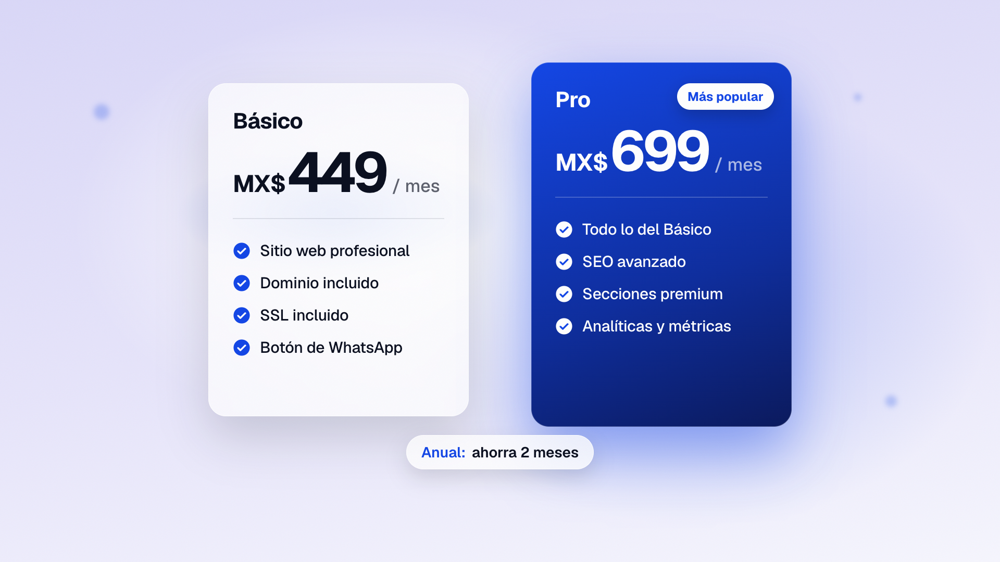
Plan Básico: cuatrocientos cuarenta y nueve pesos al mes.
Las tarjetas suben; $449 cuenta hacia arriba al ritmo de la voz; Pro se eleva con "Más popular"; los ticks aparecen uno a uno.
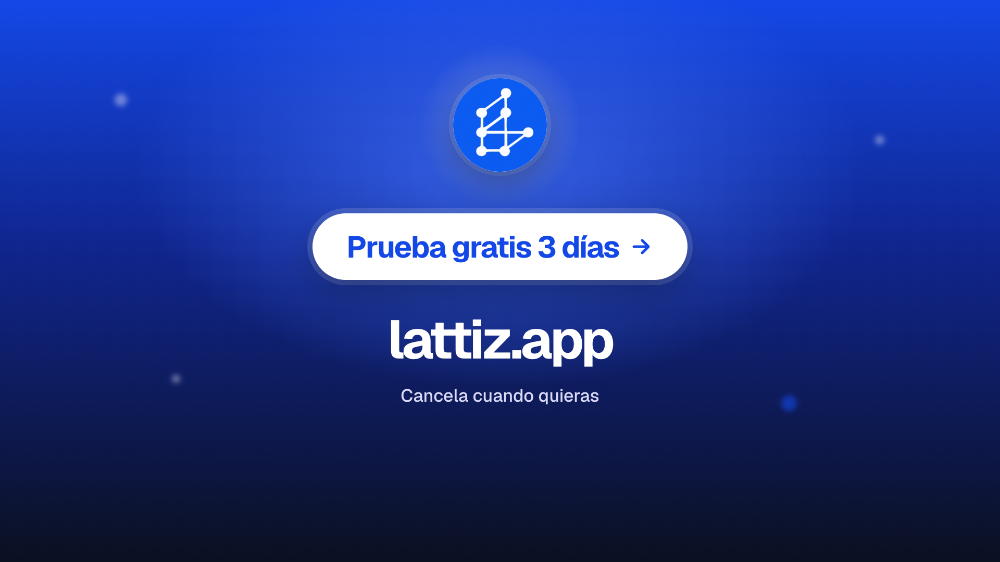
Prueba Lattiz gratis tres días, en lattiz punto app.
El logo respira, el botón late con efecto magnético, barrido de luz y un segundo final en reposo.